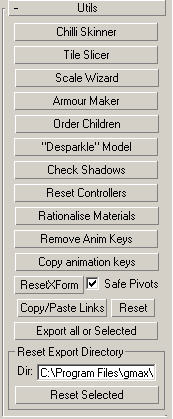
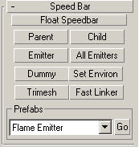

|
Tools
The core tools within NWmax are held within the "Utilities" rollout:

This section aims to provide a general description of the tools
available and where appropriate lead into more detailed information.
- Chilli Skinner - a third party utility for unwraping and
"skinning" models. It is probably best for inorganic objects
- Tile Slicer (by roboius) - this tool is a NWN CC main stay
for tile building. It will take single scene and "slice" it into
multiple NWN tile sized chunks. Including adding all the necessary
model bases and lights
- Scale Wizard - this tool support the unform scaling of the
scene. Of particular not is that it handles the scaling of skin meshes
correctly
- Armour/Robe Maker - is a tool
which combines the facilities to build new race/sex/pheno2 models off
of a base set of human models. The recommended approach is to use
the supplied "manakin" models to build your core pm?0, pf?0, pm?2 and
pf?2 models. Then scale these base four models to the other target
races you require
- Order Children - the allows you to set the order of
children off a node. This can be important when the skin is not ordered
after the "bones" it requires when exporting
- Desparkle Model - perform a rounding of the vertexes of the
selected geom to the nearest whole cm
- Check Shadows - performs a sanity check on the selected
geom for possible shadow issues. Any geom that fails the check will
have it's wire colour turned red. For this reason do not use red as a
colour if you plan to use this function
- Reset Controllers - even though the import code is setting
the position, rotation and scale controllers as type linear gmax can
still get confused. Selecting all geom and running this process
will force these settings again. And will often correct "odd" animation
behaviour within gmax
- Rationalise Materials - all materials that contain a bitmap
are scanned for duplication and consolidated then all orphans are
deleted
- Remove Anim Keys - remove animation keys of the possible
position, rotation or scale types from the selected objects
- Copy animation keys - this
copies animation kets from a source to a target object
- ResetXForm - this is a "smart" reset xform that will
automatically unlink your selection, apply a reset xform, collapse just
the reset xform modifier from the stack and then relink the selection.
It also has the option to preserve the pivot orientation or to realign
that with the world axis
- Copy/Paste Links - this will store all the parent
information of your selection. Then at a later point by pushing the
button again allow you to restore those links
- Export all or selected - does what is says. Exports all the
model bases in the scene or only those that are selected
- Restet Export Directory - resets the export directory of
all the selected Aurorabases to the path specified
Speedbar

The speed bar is an area where some of the simple more often used
little utilities sit. The exact shape of it will probably change over
time as a better feel is achieved on what is really needed to be
available all the time.
- Float Speedbar - this undocks the whole NWmax docked
section and makes it a classic floating rollout window
- Parent - select the parent of the currently select object.
Uses selection[1] in the case of multiple selectons
- Child - select the children of the currently selected child
- Emitter - creates an emitter all presized at position
[0,0,0]
- All Emitters - selects all emitters
- Dummy - creates a dummy in the standard NWN size
- Set Environ - sets the unit of measures for the scene to cm
- Trimesh - converts the selected object into a proper trimesh
- Fast Linker - links all objects in the selection to the
only Aurorabase in the selection
- Prefabs - supports community pulgins. Through this
system people can write plugins to NWmax that make use of it's built in
functions. Selecting the prefab from the drop-down list and pushing
"Go" starts the prefb
|
|